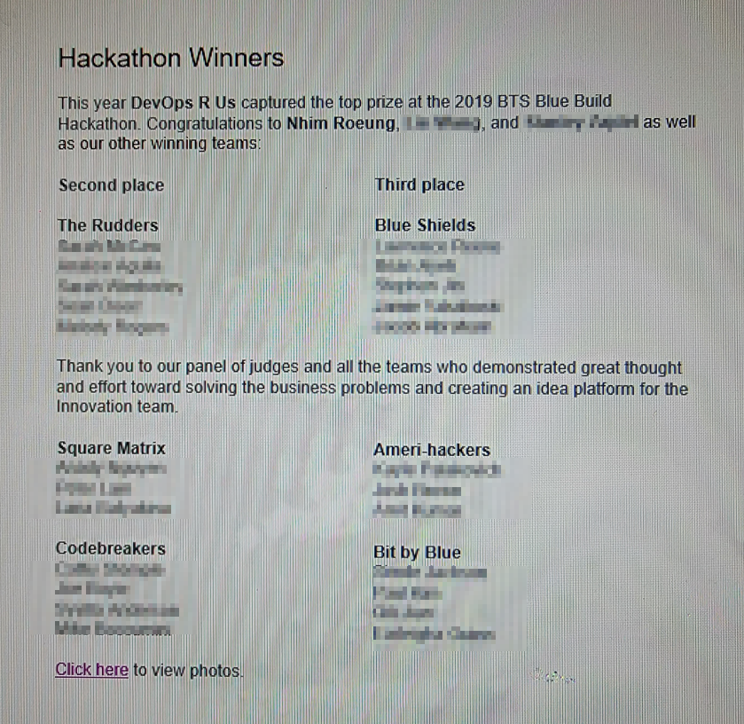
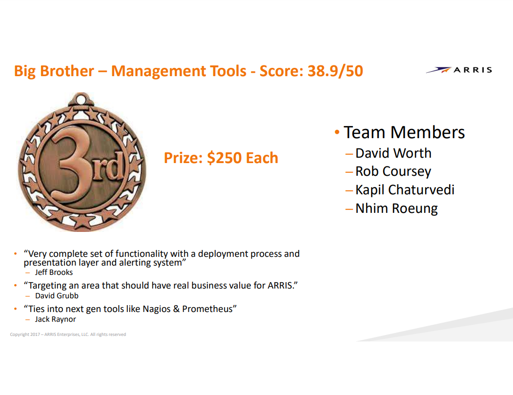
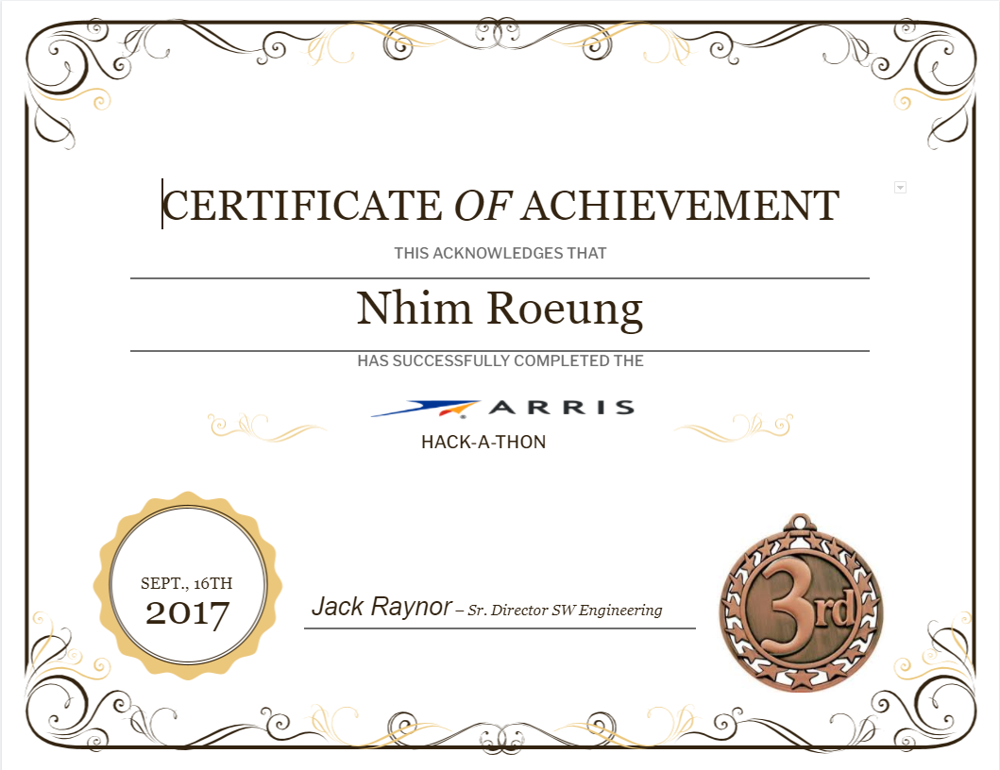

I am an experienced Site Reliability Engineer (SRE) currently working with the DNS Data-plane team at Oracle Cloud Infrastructure (OCI). My primary focus is on Tier 0 services, where I ensure high service availability and performance. With a strong background in GO-lang, Python, and Java, I handle monthly patching, application vulnerability fixes, and feature additions for critical DNS applications. I am also skilled in managing large-scale testing environments, enabling smooth cloud migrations for both customers and OCI DNS.
Before joining OCI, I served as a DevOps Engineer at Independence Blue Cross, where I designed and implemented CI/CD processes for diverse applications such as Java, Angular, .NET, and databases. I made significant contributions by developing custom Java plugins, implementing security features, and leveraging data aggregation techniques for comprehensive auditing and metrics.
Driven by my passion for delivering exceptional service reliability, I continue to strive for excellence in my work and projects. My ultimate goal is to ensure customer satisfaction and success by consistently driving enhancements and improvements.
Linkedin ResumeRemote
Senior Site Reliability Developer - Specializing in app development, service migrations, and DNS
Philadelphia, PA
DevOps Engineer - Specializing in Creating/Managing Pipeline as code, DevSecOps, and Data Analytics
Horsham, PA
Systems Engineer - Specializing in Networking, VM's, and Infrastructure
Philadelphia, PA
Network Engineer - Intern
Designed and developed an idea management system for the Innovation Team that utilizes a social media format with gamification for idea creation, conversation, and rewards. Turned a Hackathon project into an actual product that is currently being used at IBC.
Designed and developed a VM orchestration tool that focused on VM management, monitoring, and data acquisition for Arris products. Made to be out of the box product that utilizes 3rd party tools (Prometheus, Grafana, Tableau, Nagios, and Netdata) and compatible with Arris ECO platform.
 CICD
I possess extensive knowledge in CI/CD, including Gitflow and Github flow. I teach and automate merging jobs to further enhance the workflow while adhering to best release practices.
DevSecOps
DevSecOps adds a layer of security to the development lifecycle. Integrating third-party scanning tools for static code and component-based scanning allows for the reliable and high-quality passage of applications through the pipeline in this era of vulnerabilities and security exploits.
Pipeline as Code
Pipeline as code allows for greater flexibility and automation. The only limitation is the challenge of creating a single pipeline that works for all. I have experience in Jenkins DSL/Scripted Pipeline and Azure DevOps, where I set up environments from scratch.
Cloud
Why dedicate resources to a single application? It is far more efficient and reliable to deploy and maintain environments in the cloud.
Data Collection and Analysis
Data is everything, but raw data alone is useless. It needs to be collected, aggregated, and stored properly to best demonstrate its value.
Dashboards
What are the best ways to showcase mean time to recovery (MTTR), efficiency, or even the value of a product? Over the years, I have created meaningful dashboards for development teams and management to help them understand their current status and how to improve.
Copyright © 2023 Nhim Roeung